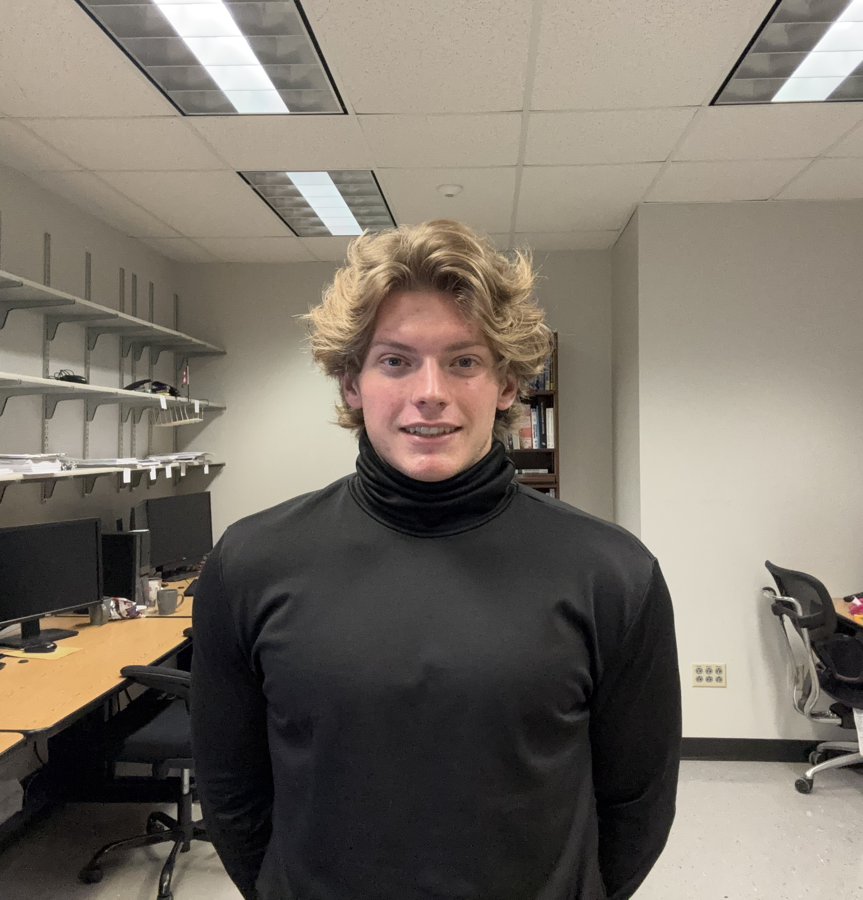

Bio;
Hey, my name is Caleb Magill, and I am a junior CS student at Kent State University! I have a variety of interests, as this website will demonstrate, and it is my hope that said showcasing will help to articulate my character. I’m currently in pursuit of PhD program opportunities as I very much enjoy academia, and I one day hope to be a professor! Currently, most of my creative endeavors involve writing, though I’d like to transition toward other such mediums, notably video games :)
Research;
My research background is in distributed systems whereas I presently am employed as a Research Lab Assistant apart of the Scalable Computer Architecture & Emerging Technologies Laboratory (SCALE), where I work with Dr. Sharma and other faculty & undergrad peers. Much of my deeper interest (mostly apparent through creative endeavors) centers around ‘perception’, and as such HCI is a sect I’ve begun familiarizing myself with. I’d like to pursue a discipline which reflects a deeper motivation of myself- I really want to make the world a better place after all, I’m working presently on a manifesto which perhaps better articulates these interests… Learn more here!
Creative Endeavors;
